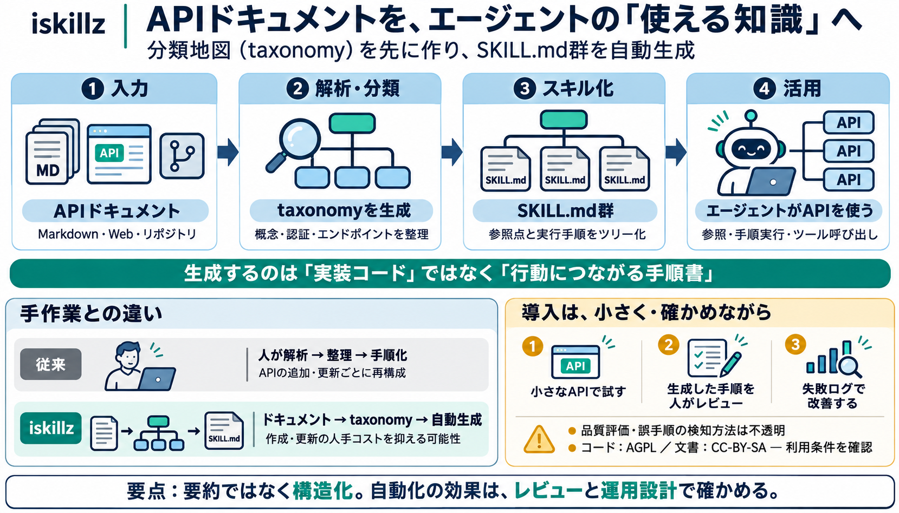

How to Install Skills in Claude Code (Every Method, 2026)…
If SKILL.md is not at the root of the cloned folder, move it up one level: ``` mv ~/.claude/skills/repo-name/src/SKILL.…

If SKILL.md is not at the root of the cloned folder, move it up one level: ``` mv ~/.claude/skills/repo-name/src/SKILL.…
Skills are directories containing a `SKILL.md` file with YAML frontmatter: `--- name: my-skill description: A clear des…
### Skills の構造 ``` skill-name/ ├── SKILL.md # エントリポイント（必須）- 目次と基本指示 ├── scripts/ # 実行可能なスクリプト（オプション） ├── references/ # …
## What Are Claude Code Skills & Agent Plugins? Claude Code skills (also called agent skills or coding agent plugins) a…
### Update skills To keep your skills up to date, run the following command: ``` # Update all installed skills to the…